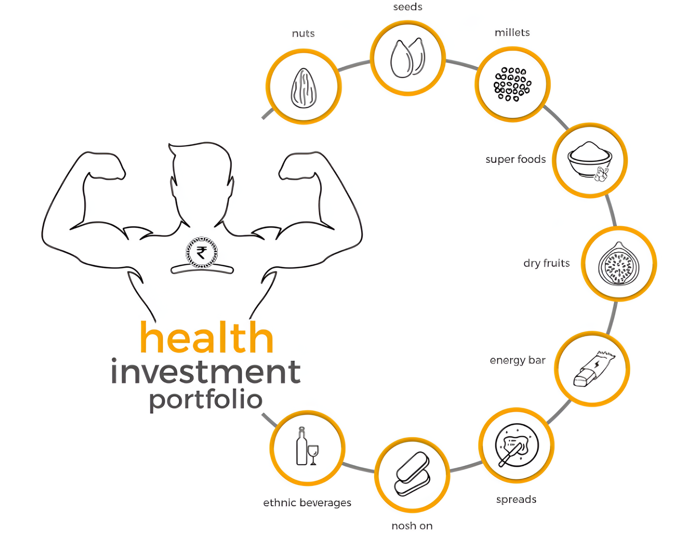

nutmeals (nutrition meals) is guided by philosophy: "food as a preventive pharmacy"
Our intention is to educate consumers about FUNCTIONAL, HEALTHY & DIVERSE food options available based on their lifestyle and medical profile.
We have outlined and introduced the TREE OF NUTRITIONAL WELL BEING for the community that highlights PROBLEM, SOLUTION and SOURCES of healthy and nutritious food.
The portfolio for Investment in nutrition (aka category of products) includes nuts, seeds, dried fruits, millets, energy bars, nosh on, spreads, ethnic beverages and gifts.
nutmeals (nutrition meals) is guided by philosophy: "food as a preventive pharmacy".
Our entire value chain cares for HEALTH and HYGIENE, Consistency in SELECTION (sorted & graded) and SOURCING of materials based on products source (location), nutrition (value) and ENVIRONMENT FRIENDLY (non-polluting) process.
nutmeals – Prescribed Nutrition Meals Welcome to nutmeals, where our philosophy of 'food as a preventive pharmacy' drives us to educate consumers about the abundance of functional, healthy and diverse food options tailored to their lifestyle and medical profile.
At nutmeals, we aim to spread education and guidance to consumers, offering functional, healthy and diverse nutrition products that are tailored to their lifestyle and medical profile. Our revolutionary inception- The Tree of Nutritional Well-Being, led to a wide portfolio of the best nutrition products in India. These include nuts, seeds, dried fruits, millet, energy bars, spreads, beverages and gifts. All of these diet snacks satisfy both taste buds and nutritional needs while being all-natural. Furthermore, we also prioritize environmentally friendly practices throughout our value chain.
Our Products Reflect Our Credibility! nutmeals, the leading online store, guarantees the freshest and finest dry fruits and nutrition products, sourced from various geographical regions of India. Along with providing the best nutrition products in India, we ensure optimal affordability as the products are available at wholesale prices. nutmeals feels proud to tell you that we offer the fastest delivery services in Ahmedabad and across India. We are among the most reliable online stores for dry fruits, offering diet snacks online in India. Our motto is to continue serving our valuable customers with nothing less than the best.
Active
User
July 24, 2019
2 mins read
2 react
Mauris mattis auctor cursus. Phasellus tellus tellus, imperdiet ut imperdiet eu, iaculis a sem. Donec vehicula luctus nunc in laoreet...
Active

User
July 24, 2019
2 mins read
2 react
Mauris mattis auctor cursus. Phasellus tellus tellus, imperdiet ut imperdiet eu, iaculis a sem. Donec vehicula luctus nunc in laoreet...
Active
User
July 24, 2019
2 mins read
2 react
Mauris mattis auctor cursus. Phasellus tellus tellus, imperdiet ut imperdiet eu, iaculis a sem. Donec vehicula luctus nunc in laoreet...